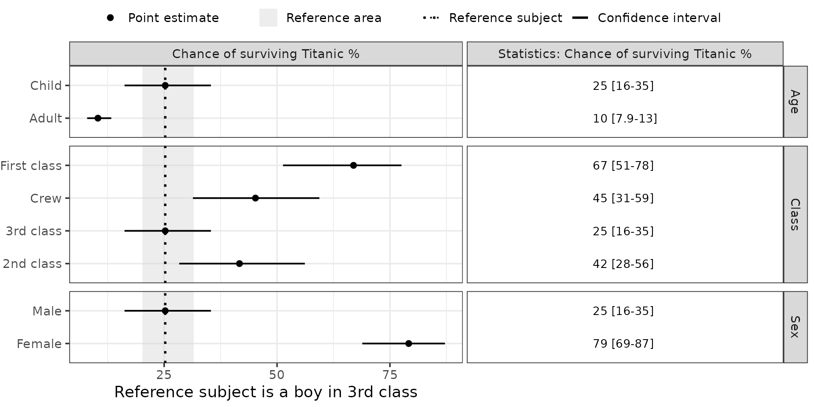

3. Deep Dive: Forest Plots for R-Coded Models
Part3-deep-dive-r-coded-models.Rmd
suppressPackageStartupMessages({
library(PMXForest)
library(ggplot2)
library(boot)
})
theme_set(theme_bw(base_size = 14))
theme_update(plot.title = element_text(hjust = 0.5))
set.seed(865765)Introduction
The parametric workflow in the Quick-Start and Walkthrough relies on getForestDFSCM(), which expects NONMEM-style parameter vectors. When the model is fitted in R, the plot data can be assembled directly and passed to forestPlot().
This vignette builds a Forest plot from a logistic regression model fitted with glm(), with the uncertainty taken from a non-parametric bootstrap using the boot package. The response is survival in the Titanic data set.
dfT <- as.data.frame(Titanic)
## Expand the frequency table to one row per passenger
dfData <- data.frame()
for (i in seq_len(nrow(dfT))) {
if (dfT$Freq[i] != 0) {
dfData <- rbind(
dfData,
data.frame(
Class = as.character(dfT$Class[i]),
Sex = as.character(dfT$Sex[i]),
Age = as.character(dfT$Age[i]),
Survived = as.character(dfT$Survived[i]),
stringsAsFactors = TRUE
)[rep(1, dfT$Freq[i]), ]
)
}
}Three pieces are needed:
- the covariate values to display;
- the model, as R functions for fitting and prediction;
- the uncertainty distribution of the predictions.
1. Fit and prediction functions
glmfitpredfunc() fits the logistic model on a bootstrap resample and predicts the survival probability for a set of covariate combinations. Its signature (data, indices, …) is the form boot::boot() requires.
## Fit a logistic regression
glmfitfunc <- function(fitdata, indices, strDV, strCovs, strInteraction = "") {
dt <- fitdata[indices, ]
glm(
formula = paste0(strDV, " ~ ", paste(strCovs, collapse = "+"), strInteraction),
family = binomial(link = "logit"),
data = dt
)
}
## Predict the probability of the modelled event
glmpredfunc <- function(glmfit, preddata) {
predict(glmfit, newdata = preddata, type = "response")
}
## Fit and predict in one call
glmfitpredfunc <- function(fitdata, indices, strDV, strCovs,
strInteraction = "", preddata = NULL) {
if (is.null(preddata)) preddata <- fitdata[indices, ]
glmpredfunc(
glmfitfunc(fitdata, indices, strDV, strCovs, strInteraction),
preddata
)
}2. Covariate values
createInputForestData() builds the row structure. Each row of dfCovs is one row of the Forest plot. For this categorical model, the inactive cells (-99) are set to the reference level of each covariate, so every row is a complete covariate combination that predict() can evaluate.
dfCovs <- createInputForestData(
list(
"Class" = c("1st", "2nd", "3rd", "Crew"),
"Sex" = c("Male", "Female"),
"Age" = c("Child", "Adult")
),
iMiss = -99
)
dfCovs$Class[dfCovs$Class == -99] <- "3rd"
dfCovs$Sex[dfCovs$Sex == -99] <- "Male"
dfCovs$Age[dfCovs$Age == -99] <- "Child"
dfCovs
#> Class Sex Age COVARIATEGROUPS
#> 1 1st Male Child Class
#> 2 2nd Male Child Class
#> 3 3rd Male Child Class
#> 4 Crew Male Child Class
#> 5 3rd Male Child Sex
#> 6 3rd Female Child Sex
#> 7 3rd Male Child Age
#> 8 3rd Male Adult Age
covnames <- c(
"First class", "2nd class", "3rd class", "Crew",
"Male", "Female", "Child", "Adult"
)The reference subject is row 3 — a boy travelling in 3rd class.
3. Assemble the plot data
boot() refits the model on 500 resamples and predicts the survival probability for every row of dfCovs on each. The confidence interval is the 2.5th and 97.5th percentile of those predictions; the point estimate is the median.
bootPreds <- boot(
dfData,
R = 500, statistic = glmfitpredfunc,
strDV = "Survived", strCovs = c("Age", "Sex", "Class"),
strInteraction = "", preddata = dfCovs
)
## Predictions from the fit on the full data
orgPred <- glmfitpredfunc(
dfData, seq_len(nrow(dfData)),
strDV = "Survived", strCovs = c("Class", "Age", "Sex"), strInteraction = ""
)forestPlot() reads a fixed set of columns. Assembling them by hand means the plot is not tied to any particular fitting engine.
dfres <- dfCovs
dfres$COVNAME <- covnames
dfres$GROUP <- c(1, 1, 1, 1, 5, 5, 7, 7)
dfres$COVNUM <- seq_len(nrow(dfres))
## Reference from the bootstrap (row 3: boy, 3rd class) and from the observed data
dfres$REFFUNC <- 100 * median(bootPreds$t[, 3])
dfres$REFTRUE <- 100 * median(orgPred)
for (i in seq_len(nrow(dfres))) {
q <- quantile(bootPreds$t[, i], probs = c(0.025, 0.5, 0.975), names = FALSE)
dfres$Q1[i] <- 100 * q[1]
dfres$POINT[i] <- 100 * q[2]
dfres$Q2[i] <- 100 * q[3]
}
dfres$GROUPNAME <- dfres$COVARIATEGROUPS
dfres$PARAMETER <- "Chance of surviving Titanic %"
dfres$COVEFF <- FALSE| Column | Meaning |
|---|---|
COVNAME, GROUPNAME
|
row label and covariate-group label |
GROUP, COVNUM
|
grouping index and row order |
POINT, Q1, Q2
|
point estimate and confidence-interval limits |
REFFUNC |
reference value the relative scale divides by |
REFTRUE |
observed-data reference, drawn as the reference line |
PARAMETER |
facet label |
4. Draw the plot
The data is on an absolute scale (percent surviving), so plotRelative = FALSE. The reference line is the observed median survival.
forestPlot(
dfres,
plotRelative = FALSE,
referenceInfo = NULL,
xlb = "Reference subject is a boy in 3rd class",
errbartabwidth = c(1, 1)
)
The same pattern works for any model that can be resampled: fit on each replicate, predict for the covariate combinations, then fill POINT, Q1, Q2, and the reference columns. For NONMEM parameter vectors, getForestDFSCM() does this assembly for you — see the Walkthrough.